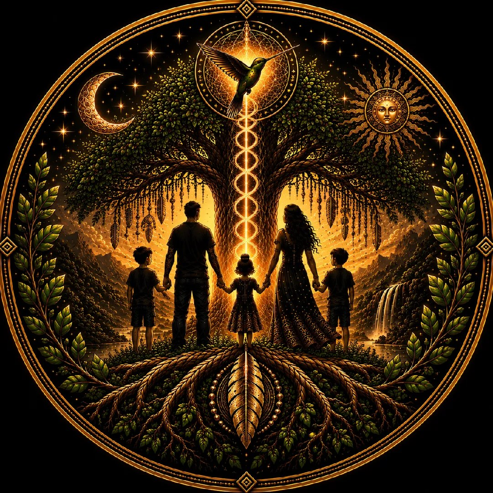
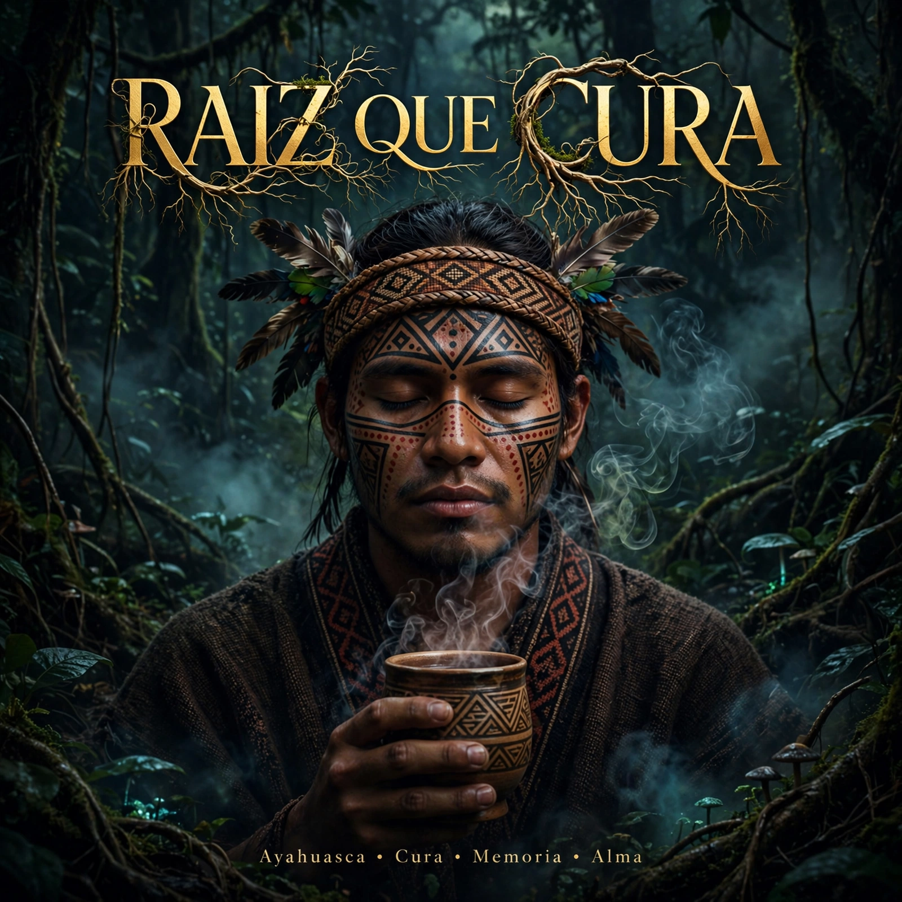

GUARDIÃO
ANCESTRAL
ANCESTRAL
🍃
PROJETO MUSICAL SOM DO ANCESTRAL
🍃Canções que unem espiritualidade, ancestralidade e emoção, atravessando fé, força, cura interior e conexão com as raízes.
“Feche os olhos... Respire... e permita que o ancestral fale.”
🍃 LANÇAMENTO EM DESTAQUE 🍃

RAIZ QUE CURA
Canção de Cura e Reconexão
O que eu chamava de passado...
Ainda morava dentro de mim...
A medicina só mostrou
o que precisava florir.
Ainda morava dentro de mim...
A medicina só mostrou
o que precisava florir.
Um canto que brota da terra, cura feridas ancestrais e reconecta com a sabedoria da floresta.
▶ OUVIR AGORA
SOBRE O PROJETO
Guardião Ancestral é o projeto musical Som do Ancestral, que traz canções de rezo, cura e conexão espiritual. Músicas que tocam a alma e reconectam com as raízes mais profundas do ser.